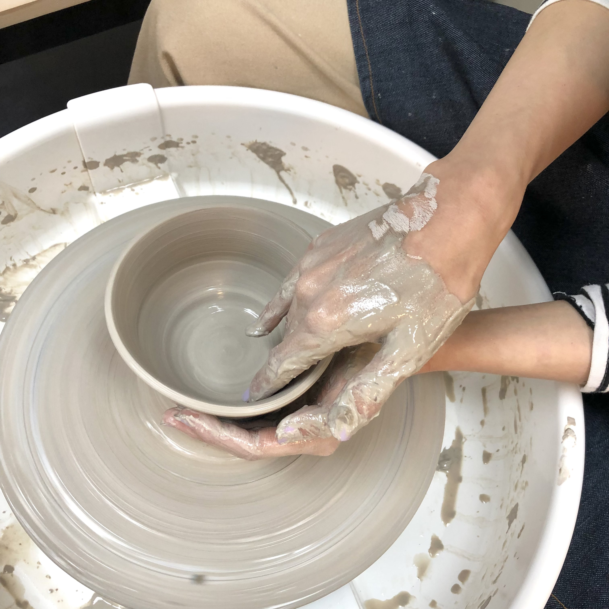

DODREAM CERAMIC STUDIO · NEW WESTMINSTER
Regular Pottery Class Registration Now Open
Make space for your hands and your ideas. Learn pottery in a warm, small-group studio.
Explore Classes →OUR PROGRAMS
Find your way into clay.
From a first spin on the wheel to a private celebration, there is a seat at the table for you.